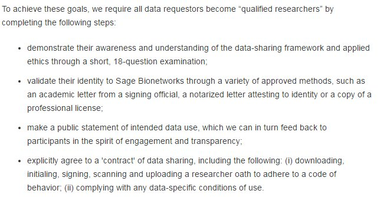
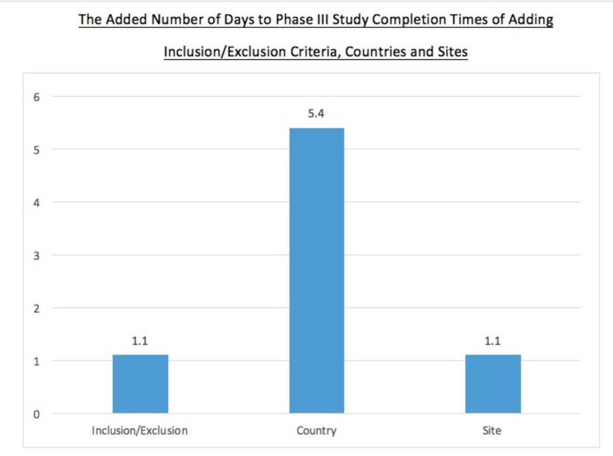

November 2016
Re-reading @wilbanks's and Friend's excellent article nature.com/nbt/journal/va… The concept of "qualified researchers" makes so much sense

@EvoMRI Interesting! We share an interest in PIDs kerfors.blogspot.se/2016/11/opentr… | via.hypothes.is/http://trialsj… and Consent kerfors.blogspot.se/2013/11/de-ide…
My blog last summer #Jupyter notebooks kerfors.blogspot.se/2015/06/jupyte… comparing with the Visicalc & Mosaic breakthroughs Yes, I was on to something
Thx for pointer @statsguyuk "A metadata schema for data objects in clinical research" My thoughts via @hypothes_is via.hypothes.is/http://trialsj…
Bookmarked: "Evaluation of the use of Swedish integrated electronic health records and register health care data a… ift.tt/2fTn6F6
Architecting for speed: How agile innovators accelerate growth through microservices 3gamma.com/insights/archi…
The top #hashtags I've used are: #linkeddata #opendata #semanticweb . Discovered via @neo4j Graph Your Network: network.graphdemos.com
Following @ekaw2016 #EKAW2016 ekaw2016.cs.unibo.it for an interesting feed with #LinkedData #SemanticWeb papers, tutorials etc
Good to see this favorite again, ... or should I say sad that it still is how things look like twitter.com/figshare/statu…
Revisting this nice service. I love it. Thinking of other applications of it. twitter.com/ryguyrg/status…
Nice! @druau featured as Ambassadors on @AstraZeneca's website astrazeneca.com/what-science-c… with links to his Twitter, LinkedIN, Pubmed profiles
IMHO - Define organisational [Study] URI schema first, instead of retrospective use of technical [Study] Page URLs kerfors.blogspot.se/2016/11/opentr…
Forecasting study completion time costs, specific protocol designs/execution plans w/ CT.gov data appliedclinicaltrialsonline.com/measuring-adde…

One of my favorite papers: Toward an Ontological Treatment of Disease and Diagnosis citeulike.org/user/kerfors/a… referenced in @nomini's post twitter.com/nomini/status/…
May we hope for one more version of the database before the end of 2016? twitter.com/CTTI_Trials/st…
Rainy Saturday, time to for a new blog post: OpenTrials, focusing on persistent study URIs kerfors.blogspot.se/2016/11/opentr… #OpenTrials #LinkedData